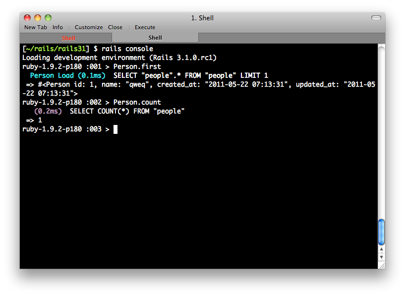

本書尚未完成，如果您有任何意見、鼓勵或勘誤，歡迎來信給我，謝謝。
本書涵蓋了Ruby on Rails絕大部分的常用功能以及介紹，為了兼顧入門及實戰，本書拆分成兩個部分：Part 1前六章為入門導覽、Part 2深入剖析則包含中高階的內容。本書期許可以讓有經驗的網頁程式設計師，可以在本書中學習到Rails之道，將之實際應用在工作之中。
Part 3: 核心擴充將另行發售。
本書使用的Rails版本是3.2，Ruby版本是1.9.3。本書出版後請參考本書網站以獲得最新相容性修改。
你可以在http://ihower.tw/rails3看到本書最新版本以及紙本勘誤。如果你有任何問題，也歡迎來信給我。
範例程式碼則在https://github.com/ihower/rails3book-code下載。
為了避免讀者混淆指令的使用情境，區分如下：
$開頭的是指命令列下的指令>開頭的是指在rails console主控台下的指令#是註解說明例如在以下的操作中，我們先輸入了rails console進入Rails的主控台，然後輸入Person.first和Person.count：

那麼在本書中，會這樣書寫：
$ rails console
Loading development environment (Rails 3.1.0.rc4)
> Person.first # <Person id: 1>
> Person.count # 1 本書主要對象為網站程式設計師，不適合完全沒有網頁開發經驗的朋友，在學習Rails前，您必須對以下知識有基本認識：
如果您有PHP/MySQL或ASP、JSP等網頁應用程式開發經驗，相信這些對您應該不陌生。如果不清楚的話，您可以參考附錄補充這些知識。
本書起初的材料來源，來自於準備OSSF主辦的Ruby on Rails工作坊課程，在這課程中獲得了教學相長的寶貴經驗，非常感謝中研院自由軟體鑄造場對於自由軟體和自由軟體社群的支持。本書在撰寫過程也收到非常多台灣和大陸讀者來信勘誤指教，就算只是問一個小問題或是鼓勵，也對這本書產生了良性回饋，在此也一併感謝你：hSATAC、timloo0710、seekcalm、ETBlue、Michael Wang、liukai、inepalon、Ya-yu Huang、aiasfina、David Chuang、Yu-Yao Chang、yang thomas、inepalon、guan-ting chen、Eric.Xiong、pptpb.tw、saitoTK、le jerry、jeffchen1453、EvenWu、Jasper CAI、dreamy0909、JmeHsieh、逍遥、Mark GK、LiChun、tonytonyjan、Kang-Yu Li、曾小黑、Pomin Chen、jzg、ayaya、Juan Fatas、紅音也、Vincentzh、idarfan、lixing、雨蒼、jerrycheng、maxz、TaopaiC、Fukuball、klobo、liyq205、EIA ANG、caiguo、良葛格、Lam、Daniel Tsai、Hillman Yang、sdjcw13、Jingqiang、foxzool、gogojimmy。